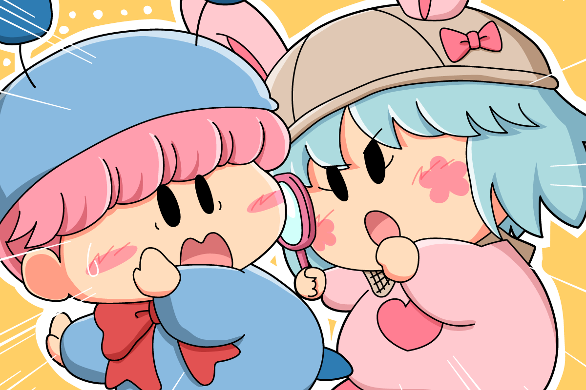

ムルモ「ただいまでしゅ〜。
・・・ってなんなんでしゅか！？」
パピィ「一人でこんなに長い時間ほっつき歩いて・・・。
なにかやまちいことがあるに違いないわ！
探偵パピィちゃんがチェックよ！」
ムルモ「ほえぇぇっ！
（やましいことがありすぎて反論できないムルモ）」
ムルパピのCP成立後、もしくは結婚後をイメージして描いてみました。ムルモって誰かに束縛されたりするのを嫌がりそうだから、一人でどこかへ出かけることが多そうな気がします。パピィもあまりムルモを疑うことをしないように努力するけど、ムルモの帰りが遅いと疑う気持ちが強くなって探偵パピィちゃんに変身しちゃいそうです。
ちなみにこの探偵パピィちゃん、2019年に私が描いた某マンガにも登場するのですが、個人的には気に入っているので今後もちょくちょく登場するかもです(^^)
(2021/6/27)